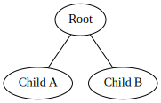
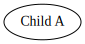
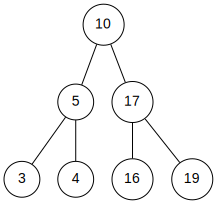

Algorithms Analysis
LeetCode Algorithm Analysis
Table of Contents
1. Introduction
While a part of me does not like the process in which many students go through LeetCode to land an internship or a full-time position at a company, I think solving problems and writing about them is fun. Besides, lately I have been trying to live more like my role models. In particular, Leonardo Da Vinci and Richard Feynman.
One of the things that I love about them is their insatiability for deep knowledge. Whatever it is they do, they have to keep digging until they find the truth. A seemingly infinite curiosity drives them. Similar to the one that drives kids to ask why continuously. In my early twenties I set out to be constantly curious as one of my driving principles. This document is nothing but another attempt at trying to live up to it.
What I cannot create, I do not understand.
Know how to solve every problem that has been solved.
—The quote was written on Richard Feynman’s blackboard at the time of his death in 1988
2. Problems
2.1. Range sum of binary search tree
2.1.1. Problem Statement
Given the root node of a binary search tree and two
integers (low and high),
return the sum of the values of all the nodes (\(n_i\))
such that \(l<= n_i <= h\).
Assumptions:
- All node values are unique.
2.1.2. Background: Binary Trees
-
Definition
A binary tree is a tree data structure in which each node has at most two children. That is why is called a binary tree.

Binary trees have interesting properties. These are so interesting that today many top-notch technology companies ask about those properties at job interviews. However, before we can dive into the properties of binary trees, we need to learn a bit of fancy terminology to understand the alien language of computer scientists.
- Sub-tree. Any tree that can be made from the elements already found in another tree. For example, in the example shown above, the tree containing a single root node called “Left child node” is a sub-tree of our initial binary tree.

-
Properties
- A rooted binary tree is one where the tree has a root node and each node has, at most, two children.
- A full binary tree is one where each node has either \(0\) or \(2\) children.
- A balanced binary tree is a binary tree in which the left and right sub-trees for every node differ in height by no more than \(1\).
-
Representation
There are many ways to represent binary trees in our computers. One of the most common methods involves using arrays.
2.1.3. Problem Solving Process
Let us imagine the following graph G for our solution.

The first solution I came up with involves simply traversing our binary tree (i.e. visiting each and every node) and checking if we should add the node value to a variable or if we should instead skip it (i.e. add 0 to our accumulator). This solution is in \(O(n)\). Great! Linear order. Usually that is a good algorithm; but, in this case, the structure of our data allows us to skip looking at all the values to know the solution to our result.
The problem asks us to sum only if the node value is in between a given range. We also know that, if we are in a given node, the node to the left has a lower value than the current node and the node to the right has a bigger value.
Thus, we have several edge cases that we can exploit:
- We are out of range and…
- we are above our range. In this case, we know we only have to traverse the tree to the left. Going to the right makes no sense since we already have a too high value. We do not accumulate this value (after all, we are outside the range) and proceed to traverse only to the left.
- we are below our range. In this other case—but for the same reason as before—we know we can skip left traversals and only do right traversals. We do not accumulate this value (after all, we are outside the range) and proceed to traverse only to the right.
- We are in the range provided…
- and we are at the lower bound. In this case, similar to before, we know we do not have to look to the left, since we are already at the boundary! Thus, we can only keep traversing to the right. However, this time we accumulate the value since we are inside the range.
- and we are at the higher bound. Again, only to the left and accumulate. I think you are getting it.
- and we are not the higher nor the lower bound. This is our base case. In this case, we simply accumulate the value of the current node and traverse both to the left and to the right.
This can be done using the following code:
from typing import Optional class TreeNode: def __init__(self, val=0, left=None, right=None): self.val = val self.left = left self.right = right raw_binary_tree = [10, 5, 17, 3, 4, 16, 19] def generate_bts_from_array(storage: list[int], root, i, n) -> TreeNode: """Return the root node of the generated BTS.""" if i < n: temp = TreeNode(storage[i], None, None) root = temp root.left = generate_bts_from_array(storage, root.left, 2 * i + 1, n) root.right = generate_bts_from_array(storage, root.left, 2 * i + 2, n) return root root = generate_bts_from_array(raw_binary_tree, None, 0, len(raw_binary_tree)) def sum_from_binary_tree_search(root: Optional[TreeNode], low: int, high: int) -> int: accum = 0 stack = [root] while stack: node = stack.pop() if not node: continue if node.val > high: stack.append(node.left) elif node.val < low: stack.append(node.right) else: accum += node.val stack.append(node.left) stack.append(node.right) return accum assert sum_from_binary_tree_search(root, 0, 1000) == sum(raw_binary_tree) print("Total sum of the graph: ", sum(raw_binary_tree)) print("Sum for nodes with values between [3, 5]: ", sum_from_binary_tree_search(root, 3, 5))
Total sum of the graph: 74 Sum for nodes with values between [3, 5]: 12